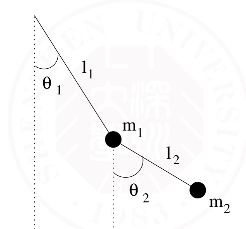
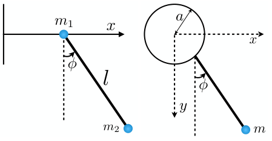
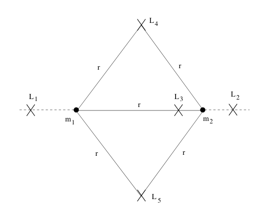

理论力学整理*
Table of Contents
1月7日考试 L3-406
…持续更新中…
发现错误请私我，会非常感谢你
PDF 可能有代差
考试内容
- 写 Lagrenge 方程：电动；摆
- 计算转动惯量
- \(L \to H\)
- 正则判断
- 简答(概念解释)，如：诺特、刘维尔定理解释；L,H 体系的区别
芝士
- 用平行轴公式，转动点不在中心
- 正则变换两种判断
在哈密顿力学中，正则变换是指一个能保持哈密顿量不变的变换。Jacobi方法提供了一种判断变换是否为正则的方法。我们首先考虑一个哈密顿系统，其相空间坐标为 \((q_1, q_2, \dots, q_n)\) 和动量 \((p_1, p_2, \dots, p_n)\) ，哈密顿量为 \(H(q, p, t)\)。
变换 \((q, p) \rightarrow (Q, P)\) 的Jacobi矩阵 \(\mathbf{J}\) 定义为：
\[ \mathbf{J} = \begin{pmatrix} \frac{\partial Q}{\partial q} & \frac{\partial Q}{\partial p} \\ \frac{\partial P}{\partial q} & \frac{\partial P}{\partial p} \end{pmatrix} \]
为了确保该变换为正则变换，Jacobi矩阵应满足行列式条件：
\[ \det(\mathbf{J}) = 1 \]
如果变换的Jacobi矩阵的行列式为1，那么这个变换即为正则变换。
- 定理解释
Noether's Theorem Consider a one-parameter family of transformations \(q(t)\to Q(s,t)\),such that \(Q(0,t)=q(t)\) if
\begin{equation*} \frac{\partial }{\partial s}L =0 \end{equation*}then this transformation is said to be a continuous symmetry of the Lagrangian L. Noether’s theorem states that for each such symmetry there exists a conserved quantity .
Liouville’s Theorem: Consider a region in phase space and watch it evolve over time. Then the shape of the region will generically change, but the volume remains the same.
Poincaré Recurrence Theorem (庞加莱回归): Consider an initial point \(P\) in phase space. Then for any neighbourhood \(D_0\) of \(P\), there exists a point \(P'\in D_0\) that will return to \(D_{}0\) in a finite time.
- L,H 体系的区别：
- 一阶方程组，二阶方程
- 构型；相空间
基本方程方法 估计肯定考
- Lagrange
- \(\frac{\partial L}{\partial \dot{q}}=p\)
如何写 \(L\) 案例：
- Bead on a Rotating Hoop
- Double Pendulum
- Spherical Pendulum
- Two Body Problem
- Restricted Three Body Problem
- Purely Kinetic Lagrangians
- Particles in Electromagnetic Fields
Bead on a Rotating Hoop
Double Pendulum 
\begin{gather*} T_1 = \frac{1}{2} m_1 l_1^2 \dot{\theta}_1^2 \quad \text{and} \quad V_1 = -m_1 g l_1 \cos \theta_1\\ T_2 = \frac{1}{2} m_2 \left( \dot{x}^2 + \dot{y}^2 \right) = \frac{1}{2} m_2 \left[ l_1^2 \dot{\theta}_1^2 + l_2^2 \dot{\theta}_2^2 + 2 l_1 l_2 \cos \left( \theta_1 - \theta_2 \right) \dot{\theta}_1 \dot{\theta}_2 \right]\\ V_2 = -m_2 g y_2 = -m_2 g \left( l_1 \cos \theta_1 + l_2 \cos \theta_2 \right)\\ L = \frac{1}{2} \left( m_1 + m_2 \right) l_1^2 \dot{\theta}_1^2 + \frac{1}{2} m_2 l_2^2 \dot{\theta}_2^2 + m_2 l_1 l_2 \cos \left( \theta_1 - \theta_2 \right) \dot{\theta}_1 \dot{\theta}_2 + \left( m_1 + m_2 \right) g l_1 \cos \theta_1 + m_2 g l_2 \cos \theta_2\\ \frac{\partial L}{\partial \theta_1} - \frac{d}{dt} \left( \frac{\partial L}{\partial \dot{\theta}_1} \right) = (m_1 + m_2) l_1^2 \ddot{\theta}_1 + m_2 l_1 l_2 \cos(\theta_1 - \theta_2) \ddot{\theta}_2 + m_2 l_1 l_2 \sin(\theta_1 - \theta_2) \dot{\theta}_2^2 + (m_1 + m_2) g l_1 \sin \theta_1 = 0\\ \frac{\partial L}{\partial \theta_2} - \frac{d}{dt} \left( \frac{\partial L}{\partial \dot{\theta}_2} \right) = m_2 l_2^2 \ddot{\theta}_2 + m_2 l_1 l_2 \cos(\theta_1 - \theta_2) \ddot{\theta}_1 - m_2 l_1 l_2 \sin(\theta_1 - \theta_2) \dot{\theta}_1^2 + m_2 g l_2 \sin \theta_2 = 0 \end{gather*}- 转动惯量
- Hamilton \(H=\sum p \dot{q}-L\)
- 正则与 Possion 括号
\(\left\{ Q,P \right\}=\frac{\partial Q}{\partial q}\frac{\partial P}{\partial p}-\frac{\partial Q}{\partial p}\frac{\partial P}{\partial q}\)
\begin{gather*} {\left\{ p,H \right\} }=\frac{\mathrm{d}p}{\mathrm{d}t }\\ {\left\{ q,H \right\}}=\frac{\mathrm{d}q}{\mathrm{d}t } \end{gather*}作业
Hw1
1.1 最速降线
Find the solution of the brachistochrone curve, which starts from \((0,0)\) and reaches \((x_{0},y_{0})\).
该问题涉及寻找从点 \((0,0)\) 到点 \((x_0, y_0)\) 的最速降曲线。 此问题可通过变分法求解，假设曲线用参数表示为 \(y = y(x)\)。运动时间 \(T\) 可写为：
\begin{gather*} T = \int_0^{x_0} \frac{\sqrt{1 + \left(\frac{dy}{dx}\right)^2}}{\sqrt{2gy}} \, dx. \end{gather*}定义 Lagrangean：
\begin{gather*} L = \frac{\sqrt{1 + \left(\frac{dy}{dx}\right)^2}}{\sqrt{2gy}}. \end{gather*}Euler-Lagrange 方程为：
\begin{gather*} \frac{\partial L}{\partial y} - \frac{d}{dx} \left( \frac{\partial L}{\partial y'} \right) = 0, \quad y' = \frac{dy}{dx}. \end{gather*}代入后化简，得到微分方程：
\begin{gather*} \frac{1}{\sqrt{y}(1+y'^2)^{3/2}} - \frac{d}{dx} \left( \frac{y'}{\sqrt{y}(1+y'^2)^{1/2}} \right) = 0. \end{gather*}解方程得到解为悬链线形式：
\begin{gather*} x = C(\theta - \sin\theta), \quad y = C(1 - \cos\theta), \end{gather*}其中 \(\theta\) 为参数，\(C\) 是常数，与初始条件相关。
1.2 坐标变换
Show that when Lagrange's equations hold in a coordinate system \(x^{A}\) with \(A=1,2,\ldots,3N\) as
\begin{equation*} \frac{\partial L}{\partial x^A}-\frac{\mathrm{d}}{\mathrm{d}t}\left(\frac{\partial L}{\partial\dot x^A}\right)=0, \end{equation*}we will also have the Lagrange's equations written as
\begin{equation*} \frac{\partial L}{\partial q_a}-\frac{\mathrm{d}}{\mathrm{d}t}\left(\frac{\partial L}{\partial\dot{q}_a}\right)=0 \end{equation*}in a coordinate system \(q_{a}\) with
\begin{equation*} q_{a}=q_{a}\left(x_{1},\ldots,x_{3N},t\right)\,\text{ for}\,a=1,2,\ldots,3N \end{equation*}1.2 拉格朗日方程的坐标变换不变性证明： \(q_a = q_a(x^1, \dots, x^{3N}, t)\)，根据链式法则：
\begin{gather*} \frac{\partial L}{\partial q_a} = \sum_A \frac{\partial L}{\partial x^A} \frac{\partial x^A}{\partial q_a}, \quad \frac{\partial L}{\partial \dot{q}_a} = \sum_A \frac{\partial L}{\partial \dot{x}^A} \frac{\partial \dot{x}^A}{\partial \dot{q}_a}. \end{gather*}发现有不好处理的 \(\dot{q}\) 对 \(\frac{\partial L}{\partial \dot{q}_a}\) 求时间导数，利用 \(\dot{x}^A = \frac{\partial x^A}{\partial q_a} \dot{q}_a + \frac{\partial x^A}{\partial t}\) 和坐标变换关系，可得：
\begin{gather*} \frac{\mathrm{d}}{\mathrm{d}t} \left( \frac{\partial L}{\partial \dot{q}_a} \right) = \sum_A \left( \frac{\mathrm{d}}{\mathrm{d}t} \left( \frac{\partial L}{\partial \dot{x}^A} \right) \frac{\partial x^A}{\partial q_a} + \frac{\partial L}{\partial \dot{x}^A} \cancel{\frac{\partial \dot{x}^A}{\partial t}} \right). \end{gather*}将以上结果代入变换后的方程：
\begin{gather*} \frac{\partial L}{\partial q_a} - \frac{d}{dt} \left( \frac{\partial L}{\partial \dot{q}_a} \right) = \sum_A \left( \frac{\partial L}{\partial x^A} - \frac{d}{dt} \left( \frac{\partial L}{\partial \dot{x}^A} \right) \right) \frac{\partial x^A}{\partial q_a}. \end{gather*}根据 \(x^A\) 坐标系中拉格朗日方程成立，上式右边恒为 0，故在 \(q_a\) 坐标系中方程也成立。
1.3 求解旋转运动方程
From the Lagrangian \(L=\frac{1}{2}m\left(\dot{r}+\omega\times r\right)^{2}\), derive the equation of motion
\begin{equation*} \frac{\mathrm{d}}{\mathrm{d}t}\left(\frac{\partial L}{\partial\dot{r}}\right)-\frac{\partial L}{\partial r}=m\left[\ddot{r}+\omega\times(\omega\times r)+2\omega\times\dot{r}\right]=0 \end{equation*}1.3 从拉格朗日函数推导运动方程： 给定拉格朗日函数：
\begin{gather*} L = \frac{1}{2}m\left(\dot{r} + \omega \times r \right)^2, \end{gather*}首先计算共轭动量：
\begin{gather*} p = \frac{\partial L}{\partial \dot{r}} = m(\dot{r} + \omega \times r). \end{gather*}对共轭动量求时间导数：
\begin{gather*} \frac{d}{dt} \left( \frac{\partial L}{\partial \dot{r}} \right) = m\left(\ddot{r} + \omega \times \dot{r} \right). \end{gather*}计算 \(-\frac{\partial L}{\partial r}\)：
\begin{gather*} -\frac{\partial L}{\partial r} = -m\omega \times (\omega \times r). \end{gather*}代入拉格朗日方程：
\begin{gather*} \frac{d}{dt} \left( \frac{\partial L}{\partial \dot{r}} \right) - \frac{\partial L}{\partial r} = m\left(\ddot{r} + \omega \times (\omega \times r) + 2\omega \times \dot{r} \right) = 0. \end{gather*}最终得运动方程：
\begin{gather*} \ddot{r} + \omega \times (\omega \times r) + 2\omega \times \dot{r} = 0. \end{gather*}Hw2 写出 L 求运动
Problem 2.1 Particle Sliding Inside a Vertical Cylinder
A particle of mass \(m\) can slide freely on the inside of a smooth vertical cylinder of radius \(R\). The particle’s position is described by the angle \(\omega\) around the axis of the cylinder and the height \(z\) along the axis. Write down the Lagrangian of the system and derive the equations of motion.
根据运动写 \(L\); 由 Euler 得运动方程
粒子在光滑的竖直圆柱内自由滑动，其位置由角度 \(\omega\) 和高度 \(z\) 描述。我们将分别推导系统的拉格朗日函数及运动方程。
拉格朗日函数
圆柱内粒子的运动可以用极坐标描述，粒子的笛卡尔坐标为：
\begin{gather*} x = R\cos\omega, \quad y = R\sin\omega, \quad z = z. \end{gather*}速度的平方为：
\begin{gather*} v^2 = \dot{x}^2 + \dot{y}^2 + \dot{z}^2 = R^2\dot{\omega}^2 + \dot{z}^2. \end{gather*}粒子在圆柱内的势能由其高度决定：
\begin{gather*} V = mgz. \end{gather*}因此，拉格朗日函数为：
\begin{gather*} L = T - V = \frac{1}{2}m\left(R^2\dot{\omega}^2 + \dot{z}^2\right) - mgz. \end{gather*}
运动方程
根据拉格朗日方程：
\begin{gather*} \frac{d}{dt}\left(\frac{\partial L}{\partial \dot{q}}\right) - \frac{\partial L}{\partial q} = 0, \end{gather*}分别对 \(\omega\) 和 \(z\) 求解。
- 对于 \(\omega\)：
拉格朗日方程为：
\begin{gather*} \frac{d}{dt}\left(mR^2\dot{\omega}\right) = 0 \implies \dot{\omega} = \text{常数}. \end{gather*}- 对于 \(z\)：
拉格朗日方程为：
\begin{gather*} \frac{d}{dt}\left(m\dot{z}\right) + mg = 0 \implies \ddot{z} = -g. \end{gather*}运动方程为：
\begin{gather*} \dot{\omega} = \text{常数}, \quad \ddot{z} = -g. \end{gather*}粒子在竖直方向做匀加速运动，在角度方向保持匀速运动。
Problem 2 Mass on a Spring-Pendulum System
A particle of mass \(m\) is suspended from a spring of natural length \(l_0\) and spring constant \(k\). The particle can oscillate vertically due to the spring’s elasticity and swing sideways as a pendulum. Let \(\omega\) be the angle of the pendulum and \(\delta l\) be the extension of the spring from its natural length. Write the Lagrangian of the system and derive the equations of motion.
系统由弹簧和摆组成，粒子质量为 \(m\)，弹簧的自然长度为 \(l_0\)，弹性系数为 \(k\)。粒子可以在弹簧方向作垂直振动，同时作为摆在侧向摆动。我们分别推导系统的拉格朗日函数和运动方程。
粒子的位置由弹簧的伸长量 \(\epsilon l\) 和摆动角度 \(\omega\) 描述。在极坐标下，粒子的笛卡尔坐标为：
\begin{gather*} x = (l_0 + \epsilon l)\sin\omega, \quad y = 0, \quad z = -(l_0 + \epsilon l)\cos\omega. \end{gather*}速度的平方为：
\begin{gather*} v^2 = \dot{x}^2 + \dot{y}^2 + \dot{z}^2 = \left[\frac{d}{dt} \left((l_0 + \epsilon l)\sin\omega \right)\right]^2 + \left[\frac{d}{dt} \left(-(l_0 + \epsilon l)\cos\omega \right)\right]^2. \end{gather*}展开并化简：
\begin{gather*} v^2 = \dot{\epsilon}^2 l^2 + (l_0 + \epsilon l)^2 \dot{\omega}^2. \end{gather*}势能由弹簧弹性势能和重力势能组成：
\begin{gather*} V = \frac{1}{2}k(\epsilon l)^2 + mg(l_0 + \epsilon l)\cos\omega. \end{gather*}因此，拉格朗日函数为：
\begin{gather*} L = T - V = \frac{1}{2}m\left(\dot{\epsilon}^2 l^2 + (l_0 + \epsilon l)^2 \dot{\omega}^2 \right) - \frac{1}{2}k(\epsilon l)^2 - mg(l_0 + \epsilon l)\cos\omega. \end{gather*}对 \(\epsilon\) 和 \(\omega\) 应用拉格朗日方程，分别推导运动方程。
对于 \(\epsilon\)：
\begin{gather*} \frac{\partial L}{\partial \epsilon} = m(l_0 + \epsilon l)l \dot{\omega}^2 - k\epsilon l - mgl\cos\omega, \quad \frac{\partial L}{\partial \dot{\epsilon}} = m\dot{\epsilon} l^2. \end{gather*}拉格朗日方程为：
\begin{gather*} \frac{d}{dt}\left(m\dot{\epsilon}l^2\right) - m(l_0 + \epsilon l)l \dot{\omega}^2 + k\epsilon l + mgl\cos\omega = 0. \end{gather*}对于 \(\omega\)：
\begin{gather*} \frac{\partial L}{\partial \omega} = -mg(l_0 + \epsilon l)\sin\omega, \quad \frac{\partial L}{\partial \dot{\omega}} = m(l_0 + \epsilon l)^2\dot{\omega}. \end{gather*}拉格朗日方程为：
\begin{gather*} \frac{d}{dt}\left(m(l_0 + \epsilon l)^2\dot{\omega}\right) + mg(l_0 + \epsilon l)\sin\omega = 0. \end{gather*}最终的运动方程为：
\begin{gather*} \frac{d}{dt}\left(m\dot{\epsilon}l^2\right) - m(l_0 + \epsilon l)l \dot{\omega}^2 + k\epsilon l + mgl\cos\omega = 0, \\ \frac{d}{dt}\left(m(l_0 + \epsilon l)^2\dot{\omega}\right) + mg(l_0 + \epsilon l)\sin\omega = 0. \end{gather*}Problem 3 \(L\)
Write down the Lagrangian and equations of motion for the following problems:
- (Left figure) A simple pendulum of mass \(m_2\), with a mass \(m_1\) at the point of support which can move on a horizontal line lying in the plane in which \(m_2\) moves.
- (Right figure) A simple pendulum of mass m whose point of support moves uniformly on a vertical circle with constant angular velocity \(\omega\).

如何写 L:速度怎么用坐标表达出来——这里要矢量和
\begin{gather*} L=K-V = \frac{1}{2}m_1\dot{x}^2+\frac{1}{2}m_2(\dot{x}^2+\dot{y}^2)-m_2gl\cos\phi \\ = \frac{1}{2}m_1\dot{x}^2 + \frac{1}{2}m_2\left[\dot{x}^2 + l^2\dot{\phi}^2 + 2l\dot{x}\dot{\phi}\cos\phi\right] + m_2gl\cos\phi. \end{gather*} \begin{gather*} L=K-V = \frac{1}{2}m(\dot{x}^2+\dot{y}^2)-mgy\\ = \frac{1}{2}m\left[(\dot{x_s} + l\cos\phi\dot{\phi})^2 + (\dot{y_s} + l\sin\phi\dot{\phi})^2\right]+mgy \end{gather*}
通过计算可以得到两组耦合的运动方程：
\begin{gather*} (m_1 + m_2)\ddot{x} + m_2l(\ddot{\phi}\cos\phi - \dot{\phi}^2\sin\phi) = 0, \\ l\ddot{\phi} + g\sin\phi + \ddot{x}\cos\phi = 0. \end{gather*}\begin{gather*} L = \frac{1}{2}m(l^2\dot{\phi}^2 + a^2\omega^2 + 2al\omega\dot{\phi}\sin\phi) - mgl\cos\phi, \\ \frac{\partial L}{\partial \phi} - \frac{d}{dt}\frac{\partial L}{\partial \dot{\phi}} = 0. \end{gather*}
运动方程为：
\begin{gather*} l\ddot{\phi} + g\sin\phi - a\omega^2\cos\phi + a\omega\dot{\phi}\cos\phi = 0. \end{gather*}Problme 4 Lagrenge points
In class, we have studied the restricted three-body problem, where we can find five Lagrange (stationary) points as shown in the following figure by \(L_i\). Discuss the stability of these Lagrange points. 
有点困难？
- \(L_1\), \(L_2\), \(L_3\): 这些点位于两主天体的连线上，因而仅在该方向上达到力平衡。
- 特点：这些点是不稳定的。
- 原因：对小扰动极其敏感，容易沿连线方向脱离平衡位置。
- \(L_4\), \(L_5\): 这些点分别位于两主天体和三角形顶点位置，形成等边三角形。
- 特点：这些点在某些条件下是稳定的。
- 条件：稳定性取决于主天体质量比。如果 \(\mu = \frac{m_2}{m_1 + m_2} < \frac{1}{2}(1 - \sqrt{69/9})\)，则 \(L_4\) 和 \(L_5\) 是稳定的。
数学描述
对于 \(L_4\) 和 \(L_5\) 的稳定性，可以引入位势函数 \(\Phi\)，其包含引力势和离心势。
\begin{gather*} \Phi = -\frac{Gm_1}{r_1} - \frac{Gm_2}{r_2} - \frac{1}{2}\omega^2r^2 \end{gather*}其中， \(r_1, r_2\) 分别为到两主天体的距离， \(\omega\) 为系统角速度。 线性化方程和特征值分析表明，当满足质量比条件时，\(L_4\) 和 \(L_5\) 周围存在稳定区域。
- \(L_1\), \(L_2\), \(L_3\): 不稳定。
- \(L_4\), \(L_5\): 条件稳定。
Hw3 转动惯量 \(\mathbf{I}\)
- Evaluate the inertia tensor I of a ring with radius r and line density λ. you should indicate the axis used.
- Evaluate the inertia tensor \(I\) of a sphere with radius r and density \(\rho\). You should indicate the axis used.
- Evaluate the inertia tensor I of a sphere with radius r and density \(\rho\) about a point at the surface of the sphere.
- In class, we have studied the heavy symmetric top problem, where we can find the motion of a symmetric top under the torque from gravity will include both the procession and nutation. Try to discuss the relation between the inertia tensor of the symmetric top and the range of the nutation.
公式：
\begin{equation*} \boxed{I=\int \mathrm{d}^{3}\rho(r) \begin{pmatrix} y^2+z^2 & -xy & -xz\\ -xy & x^2+z^2 & -yz\\ -xz & -yz & x^2+y^2 \end{pmatrix}} \end{equation*} \begin{gather*} I \end{gather*}(1) 对于一个半径为 \(r\)、线密度为 \(\lambda\) 的圆环，其转动惯量张量 \(I\) 相对于圆心轴计算：
\begin{gather*} \text{质量}:\quad M = 2\pi r\lambda. \end{gather*}利用对称性，相对于 \(z\)-轴（垂直于圆环平面）的转动惯量为：
\begin{gather*} I_{zz} = \int r^2 \, \mathrm{d}m = M r^2 = 2\pi r^3 \lambda. \end{gather*}在 \(x\)-轴和 \(y\)-轴方向，由于质点分布均匀且距离轴的垂直距离恒为零：
\begin{gather*} I_{xx} = I_{yy} = \frac{1}{2}I_{zz} = \pi r^3 \lambda. \end{gather*}最终的惯性张量为：
\begin{gather*} \mathbf{I} = \begin{bmatrix} \pi r^3 \lambda & 0 & 0 \\ 0 & \pi r^3 \lambda & 0 \\ 0 & 0 & 2\pi r^3 \lambda \end{bmatrix}. \end{gather*}(2) 对于一个半径为 \(r\)、密度为 \(\rho\) 的球，其转动惯量张量 \(I\) 相对于球心计算：
\begin{gather*} \text{质量}:\quad M = \frac{4}{3}\pi r^3 \rho. \end{gather*}转动惯量的计算利用对称性（例如 \(z\)-轴）：
\begin{gather*} I_{zz} = \int_V \rho \left(x^2 + y^2\right) \, \mathrm{d}V. \end{gather*}转换到球坐标：
\begin{gather*} I_{zz} = \rho \int_0^r \int_0^\pi \int_0^{2\pi} \left(r^2\sin^2\theta\right) r^2\sin\theta \, \mathrm{d}\phi\,\mathrm{d}\theta\,\mathrm{d}r = \frac{2}{5} M r^2. \end{gather*}由于球的对称性：
\begin{gather*} I_{xx} = I_{yy} = I_{zz}, \quad \mathbf{I} = \frac{2}{5}Mr^2 \mathbf{I}_{3\times 3}, \end{gather*}其中 \(\mathbf{I}_{3\times 3}\) 是单位矩阵。
(3) 对于一个相对于球表面上一点的转动惯量张量 \(I\)，应用平行轴定理：
\begin{gather*} I'_{ij} = I_{ij} + M \Delta x_i \Delta x_j, \quad \Delta x_i = r \text{ 是偏移量}. \end{gather*}将原始张量 \(I\)（相对于球心）加上外移效应：
\begin{gather*} I' = \begin{bmatrix} \frac{2}{5}Mr^2 & 0 & 0 \\ 0 & \frac{2}{5}Mr^2 & 0 \\ 0 & 0 & \frac{2}{5}Mr^2 \end{bmatrix} + M r^2 \begin{bmatrix} 1 & 0 & 0 \\ 0 & 1 & 0 \\ 0 & 0 & 0 \end{bmatrix}. \end{gather*}简化后：
\begin{gather*} I' = \begin{bmatrix} \frac{7}{5}Mr^2 & 0 & 0 \\ 0 & \frac{7}{5}Mr^2 & 0 \\ 0 & 0 & \frac{2}{5}Mr^2 \end{bmatrix}. \end{gather*}(4) 对称陀螺在重力作用下的进动与章动运动与其惯性张量有关。陀螺的惯性张量具有以下形式：
\begin{gather*} \mathbf{I} = \begin{bmatrix} I_\perp & 0 & 0 \\ 0 & I_\perp & 0 \\ 0 & 0 & I_z \end{bmatrix}. \end{gather*}其中 \(I_\perp\) 是垂直于对称轴的惯量，\(I_z\) 是对称轴方向的惯量。
陀螺的章动范围取决于其动能和势能的分布：
\begin{gather*} T = \frac{1}{2}\mathbf{\omega}^T \mathbf{I} \mathbf{\omega}, \quad U = -mgz. \end{gather*}动量守恒（角动量）使得 \(I_\perp\) 的值影响进动角速度，而 \(I_z\) 决定陀螺的稳定性。陀螺的章动范围增大时，通常对应 \(I_z \gg I_\perp\) 的情况。
Hw4 \(H\) 与正则
Problem 1 \(L\to H\)
Find the Hamiltonian corresponding to the following Lagrangian, and write down the corresponding Hamilton’s equations
(a). \(L = \frac{1}{2}m\dot{x}^2 + A\dot{x}\), where \(m\) and \(A\) are constants.
(b). \(L = \frac{1}{2}m\left(\dot{r}^2 + r^2\dot{\phi}^2\right) - \frac{C}{r}\), where \(m\) and \(C\) are constants.
(c). \(L = \frac{1}{2}m\dot{x}^2 - \frac{1}{2}kx^2 - b\dot{x}x\), where \(m\), \(k\), and \(b\) are constants.
(d). \(L = \frac{1}{2}ml^2\left(\dot{\theta}^2 + \dot{\phi}^2\sin^2\theta\right) + mgl\cos\theta\), where \(m\), \(g\), and \(l\) are constants.
首先计算共轭动量：
\begin{gather*} p = \frac{\partial L}{\partial \dot{x}} = m\dot{x} + A. \end{gather*}将 \(\dot{x}\) 表示为 \(p\) 的函数：
\begin{gather*} \dot{x} = \frac{p - A}{m}. \end{gather*}Hamiltonian 的表达式为：
\begin{gather*} H = p\dot{x} - L = \frac{p^2}{2m} - \frac{Ap}{m} + \frac{A^2}{2m}. \end{gather*}Hamilton 方程为：
\begin{gather*} \begin{cases} \dot{x} = \frac{\partial H}{\partial p} = \frac{p}{m} - \frac{A}{m},\\ \dot{p} = -\frac{\partial H}{\partial x} = 0. \end{cases} \end{gather*}(b). 对于拉格朗日函数
\begin{gather*} L = \frac{1}{2}m\left(\dot{r}^2 + r^2\dot{\phi}^2\right) - \frac{C}{r},\\ p_r = m\dot{r}, \quad p_\phi = mr^2\dot{\phi}.\\ \dot{r} = \frac{p_r}{m}, \quad \dot{\phi} = \frac{p_\phi}{mr^2}.\rightarrow\\ H = \frac{p_r^2}{2m} + \frac{p_\phi^2}{2mr^2} + \frac{C}{r}.\\ \begin{cases} &\dot{r} = \frac{\partial H}{\partial p_r} = \frac{p_r}{m},& \quad \dot{p_r} = -\frac{\partial H}{\partial r} = \frac{p_\phi^2}{mr^3} - \frac{C}{r^2},\\ &\dot{\phi} = \frac{\partial H}{\partial p_\phi} = \frac{p_\phi}{mr^2},& \quad \dot{p_\phi} = -\frac{\partial H}{\partial \phi} = 0. \end{cases} \end{gather*}(c). 对于拉格朗日函数
\begin{gather*} L = \frac{1}{2}m\dot{x}^2 - \frac{1}{2}kx^2 - b\dot{x}x, \end{gather*}计算共轭动量：
\begin{gather*} p = \frac{\partial L}{\partial \dot{x}} = m\dot{x} - bx. \end{gather*}将 \(\dot{x}\) 表示为动量：
\begin{gather*} \dot{x} = \frac{p + bx}{m}. \end{gather*}Hamiltonian 的表达式为：
\begin{gather*} H = \frac{p^2}{2m} + \frac{b}{m}px + \frac{1}{2}\left(k + \frac{b^2}{m}\right)x^2. \end{gather*}Hamilton 方程为：
\begin{gather*} \dot{x} = \frac{\partial H}{\partial p} = \frac{p}{m} + \frac{b}{m}x, \quad \dot{p} = -\frac{\partial H}{\partial x} = -\left(k + \frac{b^2}{m}\right)x - \frac{b}{m}p. \end{gather*}(d). 对于拉格朗日函数
\begin{gather*} L = \frac{1}{2}ml^2\left(\dot{\theta}^2 + \dot{\phi}^2\sin^2\theta\right) + mgl\cos\theta, \end{gather*}计算共轭动量：
\begin{gather*} p_\theta = ml^2\dot{\theta}, \quad p_\phi = ml^2\sin^2\theta \dot{\phi}. \end{gather*}将 \(\dot{\theta}\) 和 \(\dot{\phi}\) 表示为动量：
\begin{gather*} \dot{\theta} = \frac{p_\theta}{ml^2}, \quad \dot{\phi} = \frac{p_\phi}{ml^2\sin^2\theta}. \end{gather*}Hamiltonian 的表达式为：
\begin{gather*} H = \frac{p_\theta^2}{2ml^2} + \frac{p_\phi^2}{2ml^2\sin^2\theta} - mgl\cos\theta. \end{gather*}Hamilton 方程为：
\begin{gather*} \dot{\theta} = \frac{\partial H}{\partial p_\theta} = \frac{p_\theta}{ml^2}, \quad \dot{p_\theta} = -\frac{\partial H}{\partial \theta} = \frac{p_\phi^2\cos\theta}{ml^2\sin^3\theta} - mgl\sin\theta,\\ \dot{\phi} = \frac{\partial H}{\partial p_\phi} = \frac{p_\phi}{ml^2\sin^2\theta}, \quad \dot{p_\phi} = -\frac{\partial H}{\partial \phi} = 0. \end{gather*}正则判断
两种写法
- Possion 括号
对二维情况直接 \(\left\{ P,P \right\}=\left\{ Q,Q \right\}=0\)
- Jacobi:
写矩阵，行列式为1.
- Problem 2
Given the transformation \((q, p) \to (Q, P)\) where:
\begin{gather*} \begin{cases} P = aq + bp\\ Q = cq − dp \end{cases} \end{gather*}with constants a, b, c, d. Check if this transformation is canonical, and under what conditions on the constants it remains canonical.
当 \(ad+bc=1\) 为正则
方法一：泊松括号检验正则变换条件
变换公式为：
\begin{gather*} P = aq + bp, \quad Q = cq - dp, \end{gather*}我们计算泊松括号：
\begin{gather*} \{Q, P\} = \frac{\partial Q}{\partial q}\frac{\partial P}{\partial p} - \frac{\partial Q}{\partial p}\frac{\partial P}{\partial q}. \end{gather*}首先计算偏导数：
\begin{gather*} \frac{\partial Q}{\partial q} = c, \quad \frac{\partial Q}{\partial p} = -d, \quad \frac{\partial P}{\partial q} = a, \quad \frac{\partial P}{\partial p} = b. \end{gather*}将结果代入泊松括号的定义：
\begin{gather*} \{Q, P\} = c \cdot b - (-d) \cdot a = cb + da. \end{gather*}正则变换要求泊松括号满足：
\begin{gather*} \{Q, P\} = 1. \end{gather*}因此，正则变换的条件是：
\begin{gather*} cb + da = 1. \end{gather*}
方法二 检验辛条件
变换为正则变换，当且仅当雅可比矩阵 \(M\) 满足辛矩阵的条件：
\begin{gather*} M^T J M = J, \end{gather*}其中
\begin{gather*} M = \begin{bmatrix} \frac{\partial P}{\partial q} & \frac{\partial P}{\partial p} \\ \frac{\partial Q}{\partial q} & \frac{\partial Q}{\partial p} \end{bmatrix} = \begin{bmatrix} a & b \\ c & -d \end{bmatrix}, \quad J = \begin{bmatrix} 0 & 1 \\ -1 & 0 \end{bmatrix}. \end{gather*}计算 \(M^T J M\)：
\begin{gather*} M^T = \begin{bmatrix} a & c \\ b & -d \end{bmatrix}, \quad M^T J = \begin{bmatrix} a & c \\ b & -d \end{bmatrix} \begin{bmatrix} 0 & 1 \\ -1 & 0 \end{bmatrix} = \begin{bmatrix} -c & a \\ d & b \end{bmatrix}. \end{gather*}进一步计算：
\begin{gather*} M^T J M = \begin{bmatrix} -c & a \\ d & b \end{bmatrix} \begin{bmatrix} a & b \\ c & -d \end{bmatrix} = \begin{bmatrix} -ca + ac & -cb - ad \\ da + bc & db - bd \end{bmatrix}. \end{gather*}化简后：
\begin{gather*} M^T J M = \begin{bmatrix} 0 & cb + da \\ -(cb + da) & 0 \end{bmatrix}. \end{gather*}正则变换要求 \(M^T J M = J\)，即：
\begin{gather*} cb + da = 1. \end{gather*} - Problem 3
Check whether the following transformation for \((q, p) \to (Q, P)\) is a canonical transformation.
\begin{equation*} Q=\ln(1+\sqrt{q}\cos p),P=2(1+\sqrt{q}\cos p)\sin p \end{equation*}\begin{gather*} \left\{ Q,Q \right\}=\left\{ P,P \right\}=0 \end{gather*} \begin{align*} \{Q, P\} &= \left( \frac{\cos p}{2\sqrt{q}(1 + \sqrt{q} \cos p)} \right) \left( 2 \sqrt{q} \cos p (1 + \sqrt{q} \cos p) - 2 \sqrt{q} \sin^2 p \right) \\ &\quad - \left( \frac{-\sqrt{q} \sin p}{1 + \sqrt{q} \cos p} \right) \left( \sin p + \frac{\cos p}{2} \right) \\ &= \frac{\cos^2 p}{1 + \sqrt{q} \cos p} \left( 1 + \sqrt{q} \cos p - \sin^2 p \right) + \frac{\sqrt{q} \sin^2 p}{1 + \sqrt{q} \cos p} \left( 1 + \frac{\cos p}{2} \right) \\ &= \cos^2 p + \sqrt{q} \cos^3 p - \cos^2 p \sin^2 p + \frac{\sqrt{q} \sin^2 p}{2} + \frac{\sqrt{q} \sin^2 p \cos p}{2} \\ &= 1 \end{align*}要验证 \(\{Q, P\} = 1\) 是否成立，首先计算雅可比矩阵 \(J\)：
\begin{gather*} J = \begin{pmatrix} \frac{\partial Q}{\partial q} & \frac{\partial Q}{\partial p} \\ \frac{\partial P}{\partial q} & \frac{\partial P}{\partial p} \end{pmatrix} \end{gather*}计算各偏导数：
\begin{gather*} \frac{\partial Q}{\partial q} = \frac{1}{2\sqrt{q}(1 + \sqrt{q} \cos p)}, \quad \frac{\partial Q}{\partial p} = -\frac{\sqrt{q} \sin p}{1 + \sqrt{q} \cos p} \\ \frac{\partial P}{\partial q} = \frac{\sin p}{\sqrt{q}} + \frac{\cos p}{2}, \quad \frac{\partial P}{\partial p} = 2 \sqrt{q} \cos p (1 + \sqrt{q} \cos p) - 2 \sqrt{q} \sin^2 p \end{gather*}验证 \(J^T J = J\)： \[ JT J = \begin{pmatrix} \frac{1}{2\sqrt{q}(1 + \sqrt{q} cos p)} & -\frac{\sqrt{q} sin p}{1 + \sqrt{q} cos p}
\begin{pmatrix} \frac{1}{2\sqrt{q}(1 + \sqrt{q} \cos p)} & \frac{\sin p}{\sqrt{q}} + \frac{\cos p}{2} \\ -\frac{\sqrt{q} \sin p}{1 + \sqrt{q} \cos p} & 2 \sqrt{q} \cos p (1 + \sqrt{q} \cos p) - 2 \sqrt{q} \sin^2 p \end{pmatrix}
\frac{\sin p}{\sqrt{q}} + \frac{\cos p}{2} & 2 \sqrt{q} cos p (1 + \sqrt{q} cos p) - 2 \sqrt{q} sin2 p \end{pmatrix}\]
计算结果应为单位矩阵 \(I\)，即： \[ J^T J = \begin{pmatrix} 1 & 0 \\ 0 & 1 \end{pmatrix} \]
幻灯片整理
电动理论题
\begin{gather*} L= \frac{1}{2}m\mathbf{\dot{r}}^2-e(\phi-\dot{\mathbf{r}}\cdot \mathbf{A})\quad H=\frac{1}{2m}(\mathbf{p}-e \mathbf{A})+e\phi \end{gather*}来自更高维度的芝士 大概不会考
Euler 推导到网球拍定理
H → L
陀螺
正则变换：保辛变换
生成函数
浸渐不变量
Hamilton-Jacobi 方程，类比粒子和波
| L | 变分法 |
| H | Legendre,相空间 |
| H-J | 波粒对偶 |